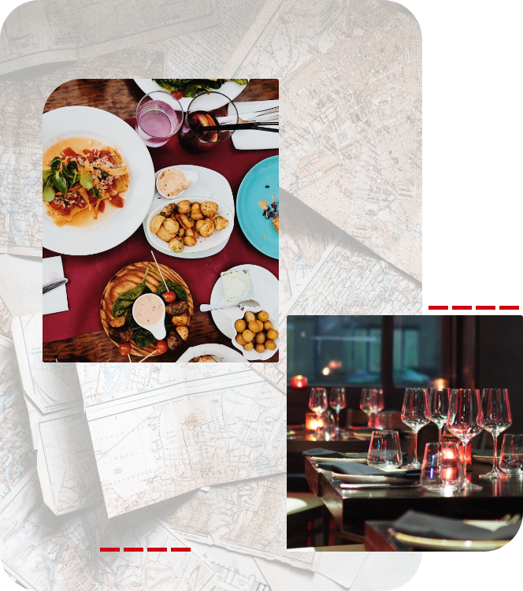

About
On-Demand Food Delivery Service is a semester-long project for San Jose State's CS160 Software Engineering Course, taught by Frank Butt. This project consists of five members: John Kennedy, Natisha Khadgi, Akshay Sud, and Hangyuan Xu.
The goal of this project is to learn Agile methodology and create a website with three tiers: front end, middle tier, and backend. You can see our work on our Github page by clicking here.
Home Page Credits
Map | Annie Spratt on UnSplash
Diner | Spencer Davis on UnSplash
Food | Victoria Shes on UnSplash
About Page Credits
Map | Andrew Neel on Pexels
Drinks | Chan Walrus on Pexels
